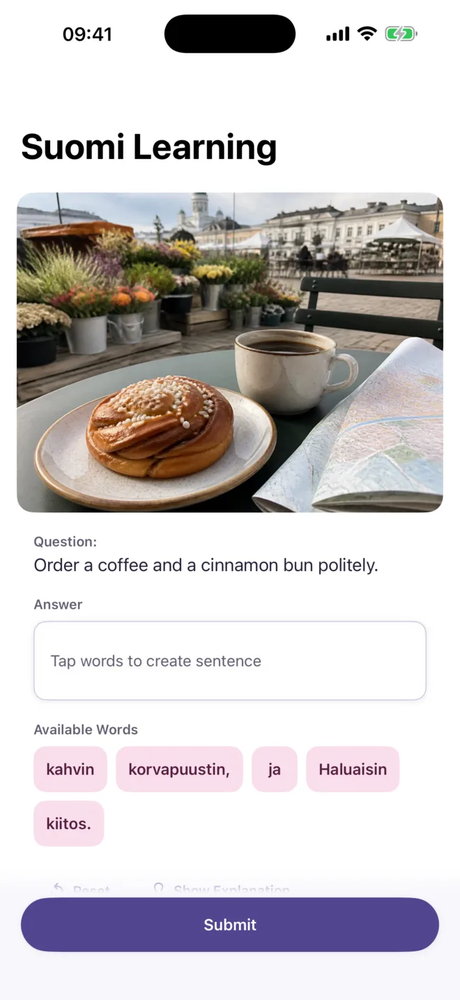
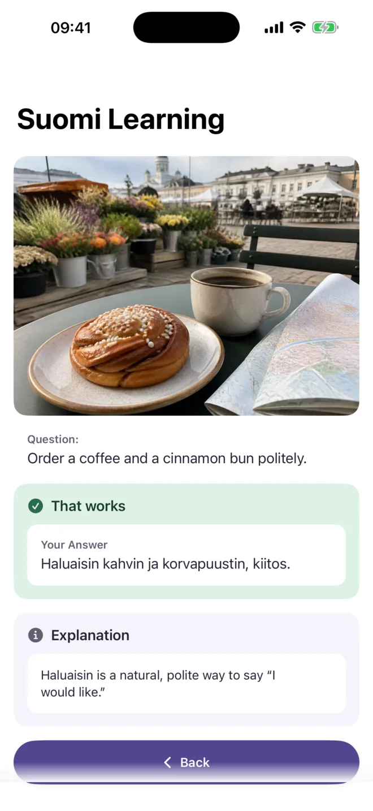
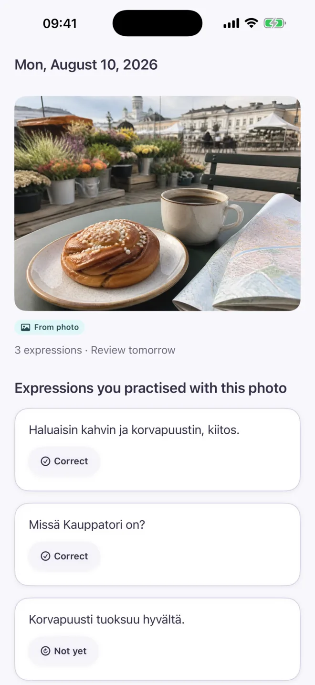
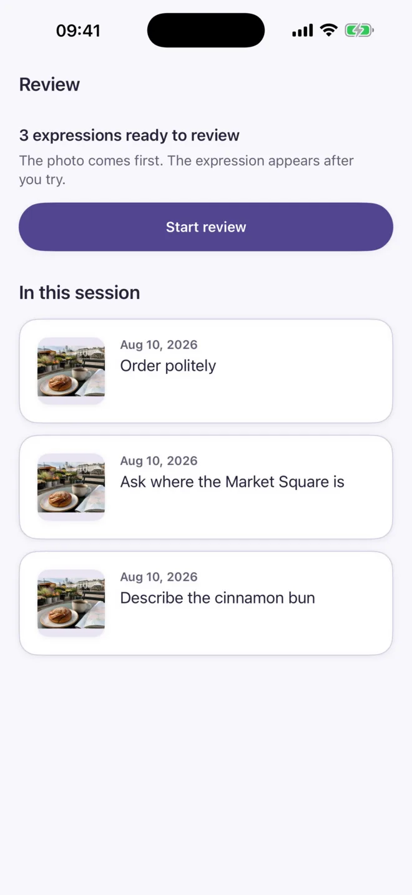

iPhone・iPad ／ 無料でダウンロード iPhone and iPad ／ free to download
きのう撮った一枚が、
きょうの教材になる。
Your moment.
Your target language.
Realingo は、カメラロールにある写真から語学の練習問題をつくるアプリです。問題文はその写真に写っているものから組み立てられるので、自分が実際に居た場面の言葉を覚えられます。
Realingo builds language exercises out of the photos already on your phone. The sentences come from what is in the picture, so you practice the words for places you have really been.
iOS 17.0 以降 ・ 18言語 ・ 無料の問題生成は端末内で動きます iOS 17.0 or later · 18 languages · Free generation runs on your device

- 18対応言語Languages
- A1–C1CEFR の難易度CEFR levels
- 4練習の形式Practice formats
- オフラインOffline端末内生成は通信不要On-device generation
使い方How it works
自分が撮った写真から問題をつくるExercises made from the photo you chose
カメラロールから1枚選ぶか、その場で撮るか、Realingo に古い写真を選ばせます。学ぶ言語と CEFR レベルを決めると、その写真に写っているものをもとに練習問題ができます。
Pick a photo from your library, take a new one, or let Realingo suggest an older one. Choose a learning language and a CEFR level, and it builds practice around what is in that picture.
写真を選ぶChoose a photo
カメラロールの1枚、その場で撮った写真、Realingo が提案する古い写真のどれでも使えます。
Use a photo from your library, one you take right now, or an older one Realingo suggests.
言語とレベルを決めるSet the language and level
18言語と CEFR A1〜C1 から選びます。文の長さも変えられます。
18 languages and CEFR levels A1 to C1. You can also set how long the sentences are.
答えて、説明を読むAnswer and read the explanation
並べ替え・穴埋め・スピーキング・ライティングに答えると、正誤とあわせて、なぜその言い方になるのかが返ります。
Answer the exercise and you get the result together with an explanation of why the phrasing works.
練習Practice
その場面で使う一文をつくるBuild the sentence you would actually say
ヘルシンキのカフェで撮った写真なら、課題は「コーヒーとシナモンロールをていねいに注文する」。写っているものと、そこでしたいことが結びついた課題になります。
From a café photo taken in Helsinki, the task reads “Order a coffee and a cinnamon bun politely.” The exercise ties what is in the picture to what you would want to do there.
- 単語の並べ替えWord arrangement
- 穴埋めFill in the blank
- スピーキングSpeaking
- ライティングWriting
フィードバックFeedback
答え合わせに、理由が付いてくるFeedback that explains the phrasing
答え合わせのあとに短い説明が付きます。たとえば Haluaisin が「〜をいただきたいのですが」にあたる自然でていねいな言い方だ、というところまで示します。
Each answer comes back with a short explanation. For example: Haluaisin is a natural, polite way to say “I would like.”

記録Memory
練習した表現は写真ごと残るExpressions stay attached to the photo
その日に練習した表現は、きっかけになった写真といっしょに日付順で残ります。単語帳をめくるかわりに、どの場面で覚えたかから思い出せます。
Everything you practice is kept by date, next to the photo that prompted it, so you can reach the phrase through the scene you learned it in.

復習Review
忘れるころに戻ってくる復習Reviews that start from the photo
復習は写真から始まります。先に場面を見て思い出そうとしてから表現が出るので、言葉と場面が結びついたまま定着します。
A review shows the photo first. You try to recall the phrase, and the expression appears after, so the words stay tied to the scene.

プライバシーPrivacy
写真を送らずに使えますIt works without sending your photos anywhere
無料の問題生成は端末内の画像モデルで動きます。モデルを一度ダウンロードすれば、写真の解析も問題の生成もオフラインで完結し、この流れでは写真はアップロードされません。スピーキングの音声認識も端末内で動きます。
Free generation uses a vision model that runs on your device. After the one-time model download, photo analysis and exercise generation work offline, and the photo is not uploaded for that flow. Speech recognition for speaking exercises also stays on the device.
端末内で完結する生成Generation on your device
約 2.8 GB のモデルを一度だけダウンロードします（メモリ 3 GB 以上の iPhone が必要）。以降は通信なし、回数制限なしで使えます。
A one-time download of about 2.8 GB, on an iPhone with at least 3 GB of memory. After that it runs with no network and no daily limit.
研究への提供は任意Research sharing is opt-in
学習データの提供は初期状態でオフです。設定でオンにしたときだけ、位置情報などを取り除いた写真と解答が送られます。いつでも止められます。
Sharing your learning data is off by default. Only when you turn it on in Settings does the app send the photo, with its metadata stripped, along with your answer. You can stop at any time.
クラウド生成は選んだときだけCloud generation only when you ask
Premium の Google Gemini による生成を選んだときに限り、その写真がクラウドに送られます。端末内の無料生成はそのまま使えます。
A photo goes to the cloud only when you explicitly choose Premium generation through Google Gemini. Free on-device generation stays available either way.
広告なし、追跡なしNo ads, no tracking
他社のアプリやサイトをまたいだ追跡はしません。広告も表示しません。バージョン 1.0 にはユーザー同士の共有機能もありません。
The app does not track you across other companies’ apps or websites and shows no ads. Version 1.0 has no sharing between users.
対応言語Languages
18言語、CEFR A1〜C118 languages, CEFR A1 to C1
学ぶ言語はメイン画面からいつでも切り替えられます。難易度は CEFR の A1 から C1 まで、文の長さも 3〜15 語の範囲で指定できます。
Switch your learning language at any time from the main screen. Difficulty follows the CEFR scale from A1 to C1, and you can set sentence length between 3 and 15 words.
- フィンランド語Finnish
- 英語English
- 日本語Japanese
- スペイン語Spanish
- フランス語French
- ドイツ語German
- イタリア語Italian
- ロシア語Russian
- 韓国語Korean
- 中国語（簡体字）Chinese (Simplified)
- アラビア語Arabic
- ヒンディー語Hindi
- ギリシャ語Greek
- ブルガリア語Bulgarian
- ベラルーシ語Belarusian
- カザフ語Kazakh
- キルギス語Kyrgyz
- アイルランド語Irish
料金Pricing
練習そのものは無料ですThe practice itself is free
Premium が足すのはクラウド生成の1点だけです。端末内での生成は、契約していてもいなくても無制限に使えます。
Premium adds one thing: cloud generation. Generating on your device stays unlimited whether or not you subscribe.
無料Free
¥0Free
- 端末内での問題生成（無制限）Unlimited on-device exercise generation
- 並べ替え・穴埋め・スピーキング・ライティングWord arrangement, fill-in-the-blank, speaking, writing
- 18言語、CEFR A1〜C118 languages, CEFR A1 to C1
- 復習スケジュールと学習履歴Review schedules, history, and progress
- サインインは任意、ローカルのバックアップと復元Optional sign-in, plus local backup and restore
Realingo PremiumRealingo Premium
月額 / 年額Monthly / yearly
- Google Gemini によるクラウド生成（1日 30 回まで）Cloud generation through Google Gemini, up to 30 a day
- 無料の端末内生成もそのまま使えますFree on-device generation still available
- 価格は App Store に表示されますPrices are shown in the App Store
- 購入は Apple アカウントで管理し、いつでも解約できますManaged by your Apple Account, cancel at any time
FAQ
よくある質問Frequently asked questions
モデルのダウンロードは必要ですか。Why is the app downloading a model, and do I need it?
無料の問題生成は端末内の画像モデルで動くので、初回に約 2.8 GB のダウンロードが必要です。メモリ 3 GB 以上の iPhone で動きます。設定 > AI Model Settings から、またはアプリが案内する「Use on-device AI」から取得できます。以降はオフラインで、回数制限なく使えます。
Free exercise generation runs on your phone with a local vision model. It is a one-time download of about 2.8 GB and needs an iPhone with at least 3 GB of memory. Open Settings > AI Model Settings, or tap Use on-device AI when the app offers it. After that, generation works offline with no daily limit.
Premium では何が増えますか。What do I get with Premium?
増えるのは、クラウド AI（Google Gemini）による問題生成が1日 30 回まで使えるようになる点です。端末内での生成は、契約しなくても無料・無制限のまま使えます。
Premium adds one thing: exercise generation through cloud AI (Google Gemini), up to 30 a day. Generating on your device stays free and unlimited whether or not you subscribe.
購入を復元するには。How do I restore a purchase?
アプリのサブスクリプション画面で Restore Purchases を押してください。購入時と同じ Apple アカウントでサインインしている必要があります。サブスクリプションは Apple が管理しているので、端末の「設定 > Apple アカウント > サブスクリプション」からも確認・解約できます。
Open the subscription screen in the app and tap Restore Purchases. Make sure you are signed in to the same Apple Account you used for the original purchase. Subscriptions are managed by Apple, so you can also review or cancel them under Settings > your Apple Account > Subscriptions.
アカウントとデータを削除したいのですが。How do I delete my account and data?
アプリの Profile から Request deletion を選びます。これは削除依頼を記録するもので、クラウド上のデータがその場で消えるわけではありません。別のアカウントを誤って変更しないよう本人確認をしたうえで、通常 30 日以内に処理します。研究データの提供は設定からすぐに止められます。
In the app, open Profile and tap Request deletion. This records a pending request rather than deleting cloud data immediately. We verify your identity first so that another account is never changed by mistake, and normally process requests within 30 days. You can stop future research sharing immediately from Settings.
どの言語を学べますか。Which languages can I learn?
フィンランド語、英語、日本語、スペイン語、フランス語、ドイツ語、韓国語、中国語（簡体字）など 18 言語です。学ぶ言語はメイン画面からいつでも切り替えられ、難易度は CEFR の A1 から C1 まで選べます。
Eighteen languages, including Finnish, English, Japanese, Spanish, French, German, Korean, and Chinese (Simplified). You can switch your learning language at any time from the main screen, and difficulty follows the CEFR scale from A1 to C1.
きょうの一枚から始めるStart with a photo you took today
App Store から無料でダウンロードできます。質問や不具合の報告、更新のお知らせの受け取りはメールでどうぞ。
Realingo is free on the App Store. For questions, bug reports, or update announcements, email works best.